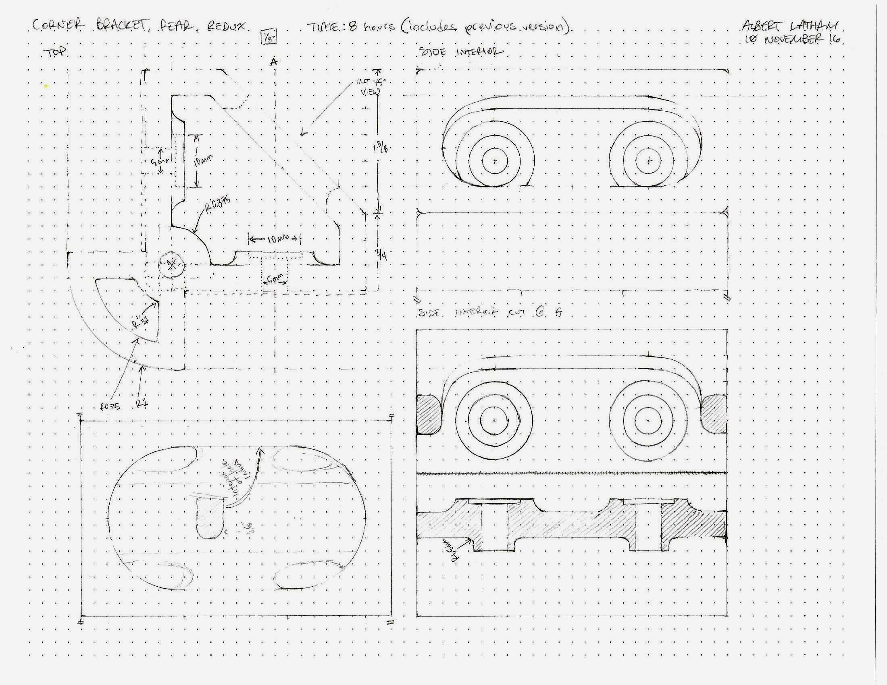
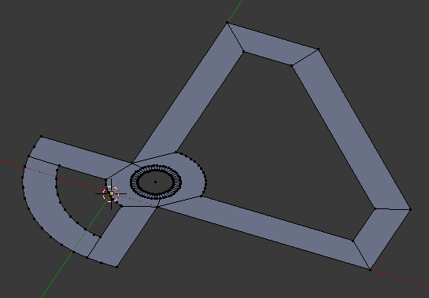
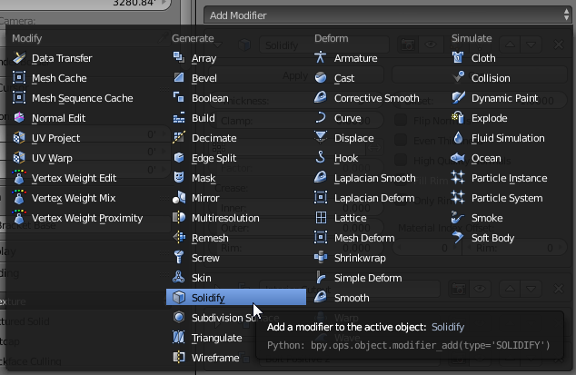
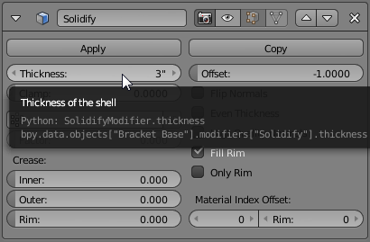
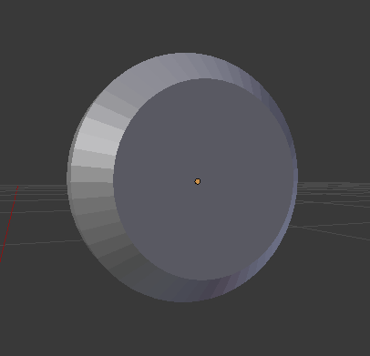
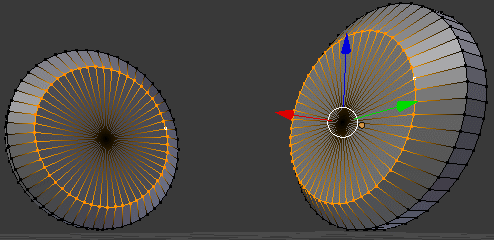
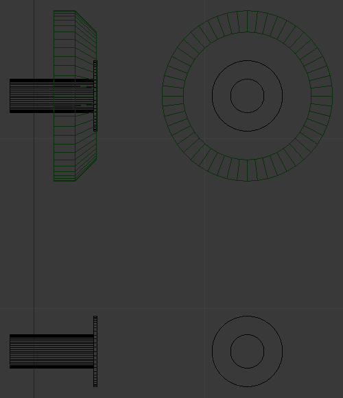
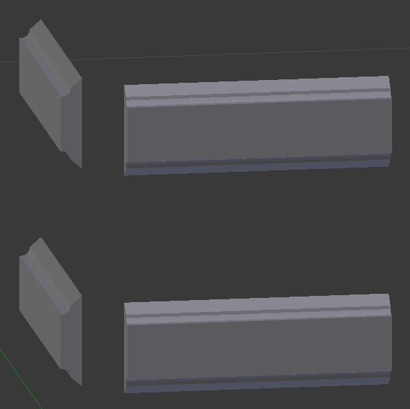
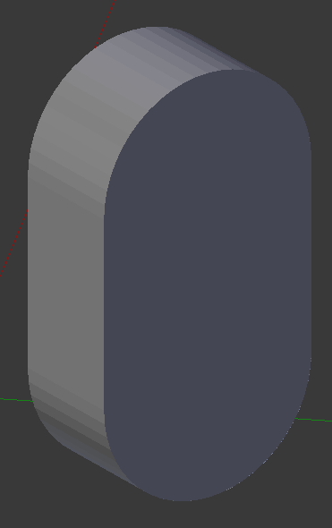
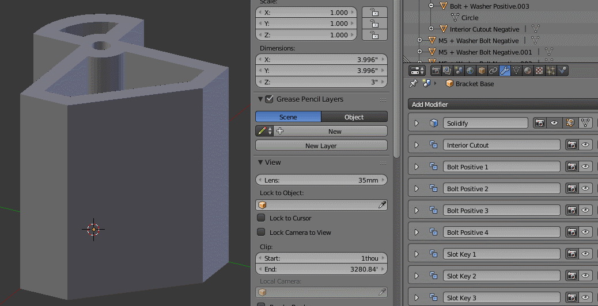

TL;DR - I modeled a corner bracket using Blender in a somewhat parametric manner. If you want to look at the file and see what I did you can find it here. You can also skip down to the modeling section to see exactly what I did.
Recently I replaced my Duplicator’s Melzi controller with something a little more sane. I’ll write a blog post in the future about the dependancy hell required to actually get a Melzi to work but for now, I need a bigger space to put my Smoothieboard in.
I prematurely bought some linear extrusion from 8020 Inc.’s garagesale and now I am working on a design for a pullout electronics drawer that will sit underneath the Duplicator.
The Design
Generally I do all my thinking on paper so that when I begin modeling there aren’t any details left out of the model. Here’s the 2D sketch I did of this part.

Blender Model
Let’s talk about the design process for CAD for a moment. Generally a CAD package expects a user to conform to a specific flow from 2D to 3D and I have tried to mimic that here. In my case I’ve done it to build some flexibility into the model.
2d Shape
First I made a shape that matched the dimensions and details of my drawing above. To get this far I made liberal use of the ‘N’ menu (which contains the global and local positions of your selection in Cartesian space) and the Snap-To (‘shift-s’) menu. For more on this technique, look here.

Extrusion
To make the 2 dimensional shape into a reversible, and dare I say, a parameter driven extrusion we’ll use the ‘Solidify’ modifier.

We set the height in the new modifier tab that pops out:

Once the correct height has been set the result looks a little like this:

Details and Mesh Duplicates
Bolt Reinforcements
I modeled a separate mesh for the reinforced bolt sections.

Using ‘Alt-D’ to duplicate (this makes an instance of the mesh that points to the original’s mesh data) I made enough for all four bolt-points. In the “scene-graph” you can see the individual objects all contain a reference to ‘Circle’. This is the original mesh that I created when modeling the part.

The advantage of doing this becomes obvious when you need to edit all of these instances all at once.

Bolt Negatives
I modeled and duplicated the bolt negatives (sized for an M5 bolt and a washer) the same was as I did the bolt reinforcements. Here’s a non-perspective wireframe showing how the bolt negatives fit into the positives.

Key Slots
Modeled using the dimensions of the aluminum extrusion I have and duplicated as above, these keys are meant to help seat the bracket firmly.

Interior Cutout

Details via the Boolean Modifier
Once I had all the bits done up I started adding boolean modifiers to my base mesh. I started with the ‘positive’ pieces and ended with the negative ones. The necessary order will depend on the situation, however, so its not necessary that your model’s boolean modifier’s follow the same order as mine. If you’re like me you’ll need to fiddle with the order to get it just right.

Note, you’ll want to choose the “carve option” in the boolean modifier tabs because the Carve library is much more robust than the Blender default boolean library.
Next time we’ll talk exporting an STL and printing!
Notes
If you were paying close attention you might be asking something like “how did you get your units in inches?”. The answer is here.